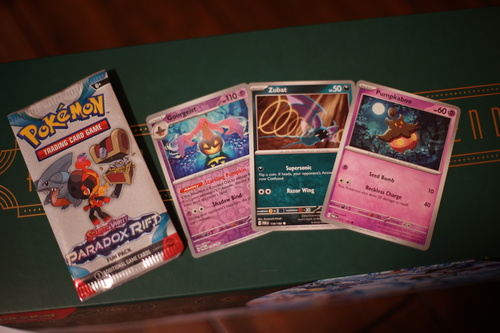
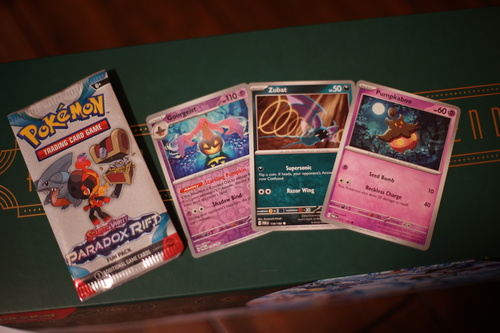

If you're ever by the waterfront in Seattle, check out the entrance of the new aquarium building! They never let me in the building, but you can enjoy the fishies from the outside for free!

You all remember Elf on the Shelf from your childhood, right? Right? No one?
You don't because Elf on the Shelf is a fake tradition that began in 2005 with a book and doll set sold for $24.95 USD. Through social media, this brand has become a time-honored treasured family tradition although nobody remembers where it came from or when it started.
There are no small children or Facebook accounts in my life, so I've been a bit slow to learn about these kinds of trends. I first discovered this in 2017 when DollfieDreams.com user sinclair posted a thread This Isn't Your Mother's Elf On The Shelf (Santa Alter). From this, I was lead to believe it was a tradition that my own family simply didn't do.
I didn't learn what a real Elf on the Shelf (spoiler: they're not DD Saber) looked like until at least a few years later when Ryan's female family members bought them. Around 2 years ago, I discovered these were not generic elf dolls and this was a franchise. These are very special Elf on the Shelf brand elves.
You can now buy Elf on the Shelf at your local Walmart or even order a bootleg on Amazon! Perhaps $7 is a bit much, but surely 99 cents with free shipping on AliExpress is within your budget. Your child probably won't notice the face is off. There's plenty of accessories to go with your elf too. You can now buy outfit sets and inner tubes for your small elf. Is one enough? Won't he get lonely getting up to shenanigans himself? Maybe consider buying him a friend too. How about a whole posse? Just imagine if they all had cute matching outfits.
Just check Pinterest and Instagram! Everyone's holidays have greatly improved due to Elf on the Shelf! Just imagine all the places you can hide your elf in your house. Your child will be mesmerized by this cute creature. Buy your very own Elf on the Shelf brand elf doll today! And don't forget to share your little guy on social media each day. Your followers will be very amused with all of your creativity!
 

A Paradox Rift fun pack. Spooky pokemon for a spooky day. Stay safe out there, my Friday the 13thers!